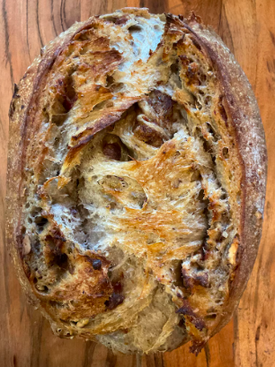

Date Pecan Sourdough

Ingredients
- 113g starter
- 282g warm water
- 180g all-purpose flour
- 120g bread flour
- 60g whole wheat flour
- 9g fine sea salt
Fillings
- 60g toasted pecans - roughly chopped
- 140g medjool dates - roughly chopped
Process
- Whisk flours and water together in large bowl with a fork.
- Let rest 30 minutes to 1 hour.
- Fold in starter and salt, combine until stiff dough forms.
- Let rest 30 minutes in warm place.
- Lamination - Gently stretch dough into long rectangle, lightly brush surface of dough with water.
- Evenly sprinkle 3/4 pecans and dates over the top, fold dough up and sprinkle remaining pecans and dates.
- With short end facing you, roll dough into a log, pinching ends to seal. Place in basket, seam side up.
- Coil foldsPerform 3 sets of coil folds 30 minutes apart.
- Cover dough and let rest 1.5 hours.
- Place parchment over dough and turn basket to release onto paper.
- Cold fermentation - Cover dough and store in refrigerator overnight.
- Preheat dutch oven in oven for 30 minutes at 500 degrees
- Make 2-3 diagonal shallow cuts (scores) into surface of dough with small knife.
- Transfer into baking pot.
- Bake covered for 25-30 minutes at 450 degrees, then uncovered for 10-15 minutes.
- Remove loaf to wire rack and cool for 1 hour before slicing.